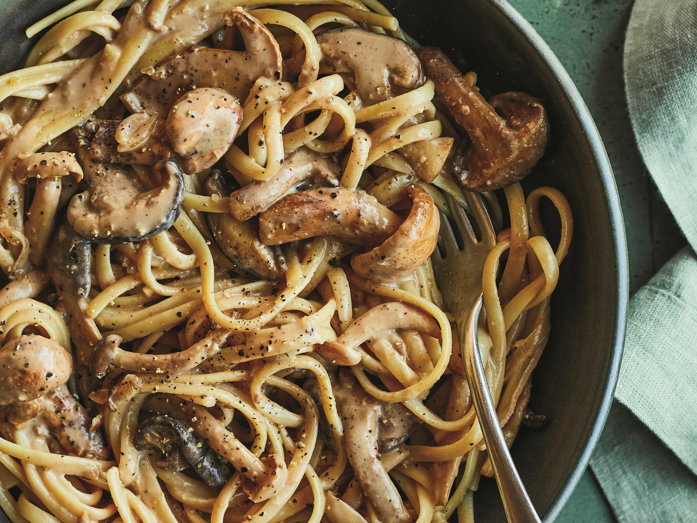

Pâtes crémeuses aux champignons

Description:
Un plat réconfortant et rapide,
où les champignons poêlés se marient à une sauce
onctueuse à l'ail et au persil.
Idéal pour un dîner de semaine en moins
de 25 minutes.
Ingrédients :
- 300g de pâtes (tagliatelles ou penne)
- 300g de champignons de Paris
- 2 gousses d'ail
- 20cl de crème fraîche (ou crème végétale)
- 1 cuillère à soupe d'huile d'olive
- Persil frais
- Sel, poivre
Étapes :
- Faire cuire les pâtes dans une grande casserole d'eau bouillante salée
- Émincer les champignons et l'ail
- Faire revenir l'ail dans l'huile d'olive, ajouter les champignons
- Cuire à feu vif jusqu'à ce que les champignons soient dorés
- Ajouter la crème, saler, poivrer, laisser mijoter 3 minutes
- Égoutter les pâtes, les mélanger à la sauce
- Parsemer de persil frais avant de servir